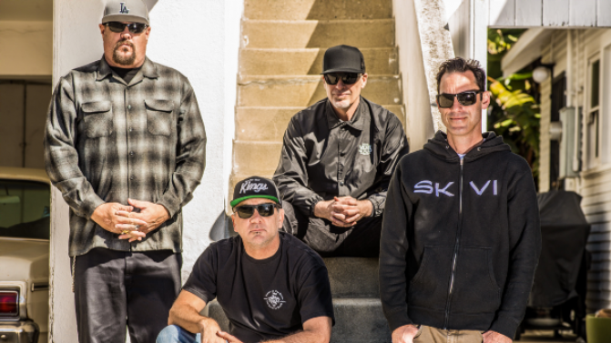

Between their 1991 self-titled debut and 2005's The Fuse, Pennywise released an album every two years on Epitaph Records, a label owned by Bad Religion guitarist Brett Gurewitz. To date, the band has released twelve full-length studio albums, one live album, two EPs and one DVD. Although their first two studio albums were critically acclaimed, Pennywise would not experience worldwide commercial success until the 1995 release of their third studio album, About Time, which peaked at number ninety-six on the Billboard 200, and number fifty-five on Australia's ARIA Charts. The band's mainstream success coincided with a growing interest in punk rock during the 1990s, along with fellow California bands NOFX, Rancid, Blink-182, Bad Religion, Green Day, The Offspring, Lagwagon and Sublime. By 2007, the band had independently sold over three million records worldwide.


Pennywise is an American punk rock band from Hermosa Beach, California,
formed in 1988.
The band took its name from the evil clown monster from the
Stephen King horror novel IT.
